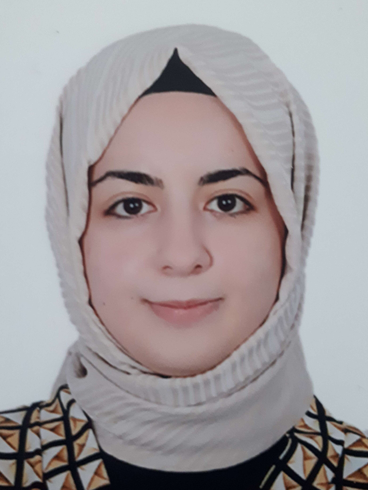

Nisa Büyükyıldırım

Contact Information: bueyuekyil@uni-potsdam.de
Address: Potsdam/Berlin, Germany
Date of Birth: 08.11.1999
Professional Experience
-
02/2024 – Present
Student Assistant at Humboldt University
-
06/2023 – 06/2024
Student Assistant at University
Path-motion events, annotations
Case alternations in heritage Turkish (RUEG P10)
Dynamics of the verbal aspect in language contact (RUEG P10)
-
01/2023 – 02/2024
Student Assistant at Leibniz Center for General Linguistics (ZAS)
Dynamics of verbal aspect in language contact, case alternations in Turkish, aspect processing using a VWP eye-tracking paradigm, and sentiments towards heritage languages
-
05/2019 – 08/2022
English Teacher at English Time Language Schools
Taught students with different learning needs and helped them achieve their potential, including junior groups and exams like TOEFL, IELTS
Education
-
11/2022 – 07/2024
University of Potsdam, Germany
MSc. Linguistics (100% English)
-
10/2018 – 05/2022
Hacettepe University, Turkey
English Linguistics (100% English) - 1.45 (German system) / 4.0 GPA
Languages
- Turkish – Native
- English – C1
- German – A2+
- Chinese – A1
Skills
- Programs: MS Office, R, LaTeX, ANNIS, EXMARaLDA
- Experimental studies and analyses, data collection, teamwork
- Eye-tracking experiments, qualitative and quantitative analysis, corpus linguistics, annotation
Publications
-
Verb Aspect Processing in Monolingual and Heritage Speakers of Turkish
Authors: Nisa Büyükyıldırım, Özce Özceçelik, Serkan Uygun, Onur Özsoy
(Preprint)
-
Accusative and Dative Case Alternations in Heritage and Majority Turkishes
Authors: Onur Özsoy, Kateryna Iefremenko, Nisa Büyükyıldırım, Christoph Schroeder, Natalia Gagarina
(In Preparation)